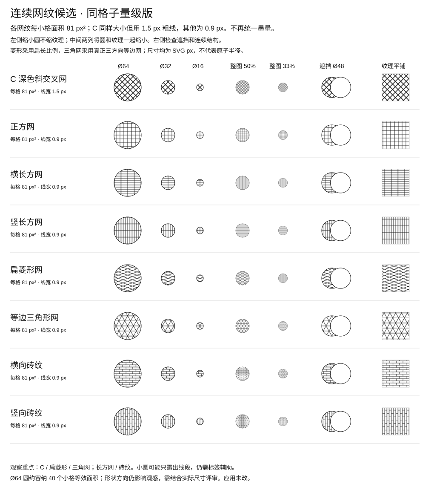

<!doctype html><html lang="zh-CN"><meta charset="utf-8"><meta name="viewport" content="width=device-width, initial-scale=1"><title>连续网纹对照</title><style>body{margin:20px;font:16px Arial,'Microsoft YaHei',sans-serif;background:#eee}button{padding:8px;margin:0 8px 12px 0}section{overflow:auto;background:white}img{display:block;width:1020px;max-width:none}.fit img{width:100%;height:auto}.half img{width:510px;height:auto}</style><nav><button onclick="document.body.className=''">100%</button><button onclick="document.body.className='half'">整体50%</button><button onclick="document.body.className='fit'">适应宽度</button><a href="grid-comparison.svg" download>下载 SVG</a></nav><section></section></html>